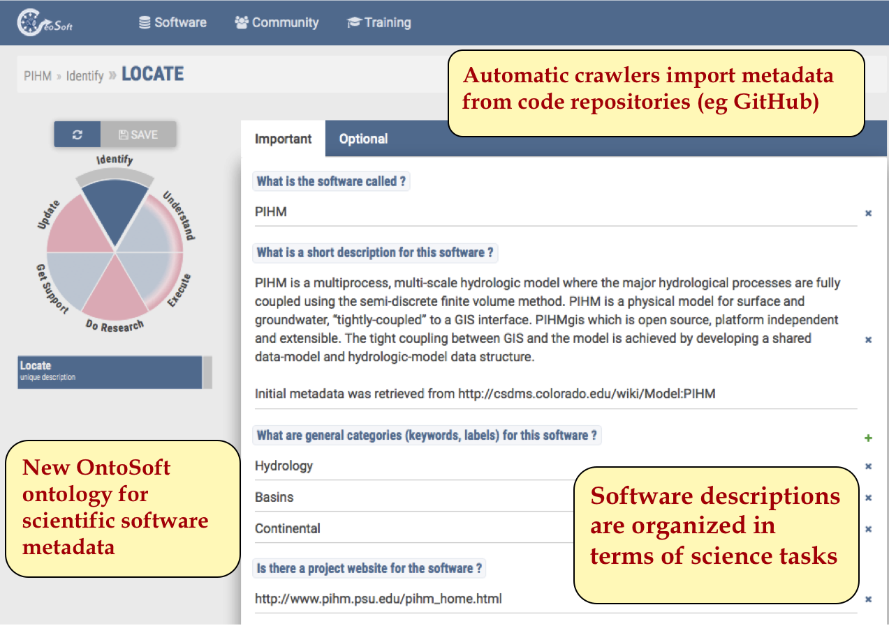
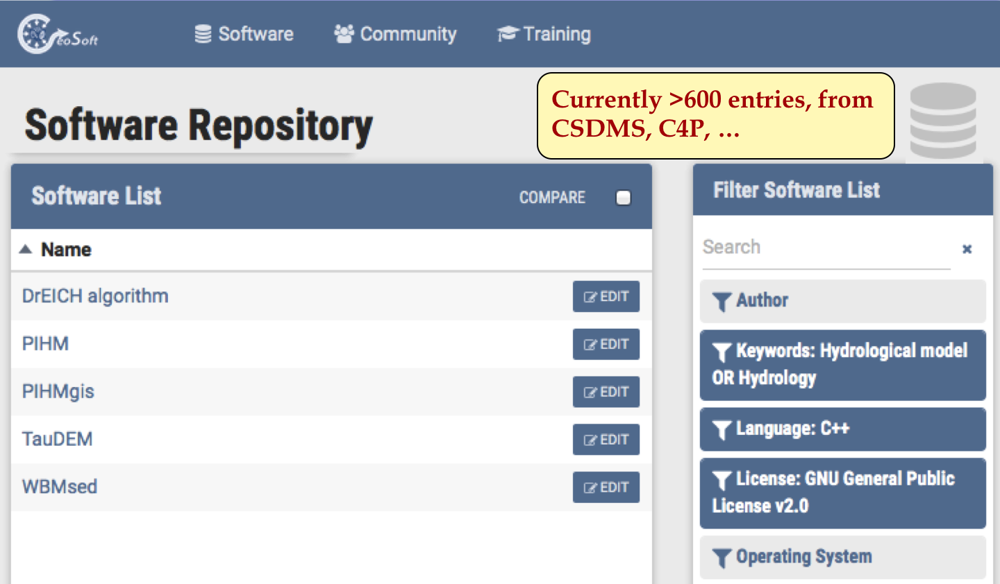
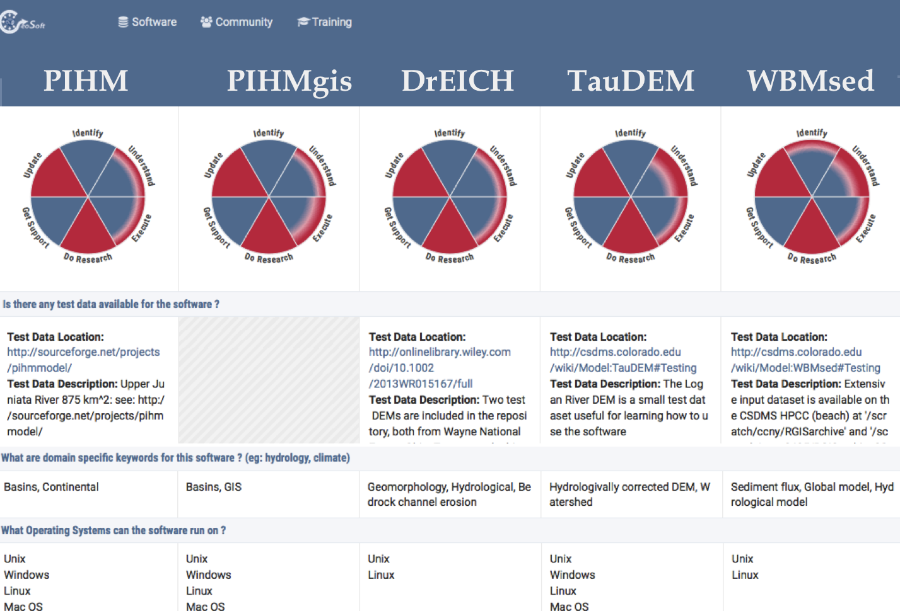
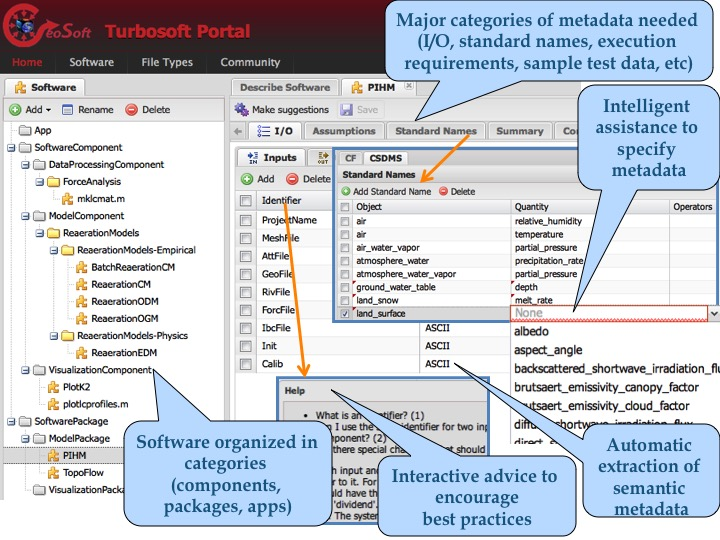

The OntoSoft project is developing an on-line community portal for sharing knowledge about geosciences software. In the initial stages of the project, we are developing a portal that will provide:
A detailed description can be found in this paper:
The source code for OntoSoft can be found on github:
OntoSoft portals are set up for particular communities and institutions, and are integrated into a general portal. In our current work, we are creating a single entry point so users can easily search across portals.
Click here to access the portals
Describing software:

Searching for software:

Comparing software:

The first version of OntoSoft was released in 2014, and was called TurboSoft. We evaluated TurboSoft with scientists in terms of usability and metadata quality. We learned a lot from these evaluations, which led to a redesign of our approach and ultilately to today's OntoSoft. You can explore the TurboSoft portal by logging in as “guest”. The source code of TurboSoft is available open source on GitHub under an ALv2 license.

TurboSoft already interfaces with current model repositories such as Community Surface Dynamics Modeling System (CSDMS), and soon Computational Infrastructure for Geodynamics (CIG) and others.
Our focus to date has been TurboSoft, an intelligent assistant that guides users through best practices for publishing their software. Here are a few demonstrations of the initial TurboSoft prototype. We continue to extend TurboSoft and welcome your suggestions.
TurboSoft provides interactive advice to encourage best practices in preparing code for software sharing. In this demo, TurboSoft does a simple analysis of the code and looks for potential problems and offers suggestions to fix them. In the example shown, when there is OS-specific code or hardcoded paths TurboSoft suggests that they be replaced with more general code. These checks are based on best practices for open software sharing and reuse.
TurboSoft automatically extracts metadata to describe software, so the user does not have to provide it by hand. In this demo, TurboSoft takes examples or test datasets, and extracts the MIME types of data as metadata of the inputs and outputs of the software. The extracted metadata allows TurboSoft to suggest visualizations or other software that can be used for those data types. The metadata extraction is done using Apache Tika.
TurboSoft automatically infers new metadata to describe software, so the user does not have to provide it by hand. In this demo, when a user specifies standard names or assumptions for their model, TurboSoft infers other assumptions made by the model. The inferences are based on rules based on semantic representations of standard names and assumptions represented using Semantic Web standards.
TurboSoft supports scalable search through the software repository. In this demo, the user searches for specific kinds of software, such as software that outputs a certain type of data or software that is open source. This faceted search is done using Apache Solr.